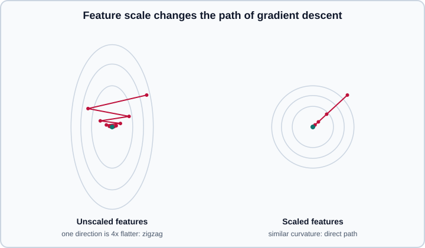

Gradient Descent & Optimization
|
This content was generated with the assistance of AI and should be verified against the official documentation before being relied on in production. |
Training a model means finding parameters that make a loss small. For a handful of simple models that has a formula; for almost everything else it is an iterative search, and the search algorithm, its step size and the shape of the loss surface decide whether training is fast, slow, unstable or stuck. This page explains the vocabulary and the behaviour of plain (stochastic) gradient descent, because every optimiser in Optimizers & Learning-Rate Schedules is a refinement of it.
This page targets Python 3.13, NumPy 2, PyTorch 2.15 and TensorFlow 2.21 with Keras 3.15, and was checked on 2026-10-30. Examples were run on Python 3.13 with NumPy 2, PyTorch 2.15 (CPU) and Keras 3.15 on TensorFlow 2.21 on 2026-11-01, and the NumPy outputs shown are from that run. Read Math for ML first for gradients and the chain rule, and Loss Functions & Information Theory for the losses being minimised. The layered machinery that computes gradients in deep networks is in Backpropagation & Automatic Differentiation.
Learning as optimisation
Given a model \(f(x; \theta)\) and a loss \(\ell\), training minimises the empirical risk (the average loss over the training set):
\[\hat{R}(\theta) = \frac{1}{N} \sum_{i=1}^{N} \ell\big(f(x_i; \theta),\, y_i\big) \;(+\; \lambda\,\Omega(\theta))\]
where the optional term is a regulariser (see Generalization, Bias-Variance & Regularization). The training procedure only needs the function value and, for the methods on this page, its gradient with respect to the parameters. Two points frame everything that follows.
-
Optimisation is not the goal. Driving the training loss to zero is easy for a flexible model and usually harmful. You stop, regularise or choose hyperparameters based on held-out data, and the optimiser is just the means of getting a good-enough minimum of the training objective.
-
The loss surface has a shape. A single bowl is easy; a landscape with long narrow valleys, flat plateaus, saddle points and many minima is not. The shape depends on the model, the loss and, importantly, on how the data are scaled.
Convex and non-convex problems
A function is convex if the line segment between any two points on its graph lies above the graph. A convex loss has no spurious local minima: every local minimum is a global minimum, and for a strictly convex one it is unique. Linear regression with squared error, logistic regression and (with the right losses) support vector machines are convex in their parameters, so with a suitable step size gradient descent reliably reaches the optimum, and the answer does not depend on the starting point.
Neural networks are non-convex, because the composition of nonlinear layers makes the loss a complicated function of the weights. Three things follow:
-
There are many minima, and different random initialisations reach different ones. In practice many of them have similar loss values and generalise similarly, which is one reason overparameterised networks train well despite non-convexity.
-
Saddle points (gradient zero, but curved up in some directions and down in others) are far more common than bad local minima in high dimensions. Plain gradient descent slows down near a saddle because the gradient is tiny; the noise in stochastic gradients and momentum both help escape.
-
Plateaus and ravines make progress slow: the gradient is small on a flat plateau, and in a ravine it points mostly across the narrow direction instead of along it (shown below).
Closed form versus iterative solutions
For linear regression with squared error, the minimiser has a closed form, the normal equation:
\[\hat{w} = (X^{\top} X)^{-1} X^{\top} y \quad\Longleftrightarrow\quad X^{\top} X\, \hat{w} = X^{\top} y\]
| Aspect | Closed form (normal equation, SVD) | Gradient descent |
|---|---|---|
Applies to |
Linear least squares and a few similar problems |
Any differentiable loss, including neural networks |
Cost |
About \(O(N D^2 + D^3)\) for N examples and D features |
About \(O(N D)\) per pass; scales to millions of features |
Hyperparameters |
None (or a ridge penalty) |
Learning rate, batch size, number of steps |
Numerical care |
Fragile when columns are nearly collinear: forming \(X^{\top}X\) squares the condition number. Use |
Needs feature scaling and a suitable learning rate |
Data size |
Needs the full matrix in memory |
Streams mini-batches |
Both give the same answer when both apply, which makes linear regression an excellent test bed. The example below fits the same data three ways: normal equation, lstsq and gradient descent on standardised features, then converts the coefficients back to the original units.
import numpy as np
rng = np.random.default_rng(42)
n = 200
X = rng.normal(size=(n, 2)) * np.array([1.0, 10.0]) + np.array([0.0, 50.0]) # very different scales
w_true, b_true = np.array([2.0, -0.3]), 4.0
y = X @ w_true + b_true + rng.normal(scale=0.5, size=n)
# 1. Closed form: solve the normal equations (never invert explicitly)
A = np.c_[X, np.ones(n)] # add a column of ones for the intercept
theta_ne = np.linalg.solve(A.T @ A, A.T @ y)
# 2. SVD-based least squares (robust to near-collinearity)
theta_ls, *_ = np.linalg.lstsq(A, y, rcond=None)
print(theta_ne.round(3), theta_ls.round(3))
# 3. Gradient descent on standardised features
mu, sd = X.mean(axis=0), X.std(axis=0)
Z = (X - mu) / sd
def gd(Z, y, lr, steps):
w, b = np.zeros(Z.shape[1]), 0.0
for _ in range(steps):
r = Z @ w + b - y # residuals, shape (n,)
w -= lr * (Z.T @ r) / len(y) # gradient of 0.5 * mean squared error
b -= lr * r.mean()
return w, b
w, b = gd(Z, y, lr=0.1, steps=500)
w_orig = w / sd # undo the standardisation
b_orig = b - np.sum(w * mu / sd)
print(w_orig.round(3), round(b_orig, 3))Output:
[ 1.991 -0.303 4.099] [ 1.991 -0.303 4.099] [ 1.991 -0.303] 4.099
Source: numpy.linalg.lstsq and scikit-learn: Ordinary least squares. The estimator is covered in Linear Models.
Gradient descent
Gradient descent repeats a single update. From the current parameters, compute the gradient of the loss and move a small distance in the opposite direction:
\[\theta_{t+1} = \theta_t - \eta\, \nabla_\theta \hat{R}(\theta_t)\]
The step size \(\eta\) is the learning rate, and it is the most important hyperparameter in deep learning. The loop is the same for a one-parameter model and a billion-parameter one.
The learning rate
On a one-dimensional bowl \(f(x) = \tfrac{1}{2} L x^2\) each step multiplies \(x\) by \((1 - \eta L)\). That single number explains the behaviour:
-
\(0 < \eta L < 1\): smooth, monotone convergence (the factor is positive and below one).
-
\(1 < \eta L < 2\): the iterate overshoots the minimum and oscillates, but still converges.
-
\(\eta L > 2\): the factor exceeds 1 in magnitude and the iterates diverge, in practice to
infand thennan.
For a general smooth loss, \(L\) is the largest curvature (the largest eigenvalue of the Hessian), so the maximum stable learning rate is about \(2/L\). Too small a rate wastes compute, and too large a rate makes the loss spike or diverge. The following loop shows the four regimes for \(L = 1\).
for lr in (0.1, 1.0, 1.9, 2.1):
x = 5.0
for _ in range(20):
x -= lr * x # gradient of 0.5 * x**2 is x
print(f"lr={lr}: x after 20 steps = {x:.4f}")Output:
lr=0.1: x after 20 steps = 0.6079 lr=1.0: x after 20 steps = 0.0000 lr=1.9: x after 20 steps = 0.6079 lr=2.1: x after 20 steps = 33.6375
Source: Dive into Deep Learning: Gradient descent, which runs the same experiment on \(f(x) = x^2\) with several learning rates.
A step of exactly 1 reaches the minimum in one step on this perfectly round bowl; real problems are never that kind. In practice you find a learning rate by a short sweep (try values a factor of about three apart on a log scale, watch the loss for a few hundred steps) and then reduce it during training with a schedule. See Optimizers & Learning-Rate Schedules for schedules and warm-up, and Tuning Deep Networks in Practice for how to tune it.
Conditioning and feature scaling
Real loss surfaces are not round. If the curvature differs a lot between directions (a large condition number, the ratio of the largest to the smallest Hessian eigenvalue), the learning rate is limited by the steepest direction while progress along the flattest direction is slow. The iterate zigzags across the valley and creeps along it.
For linear models the cause is often visible in the data: a feature measured in the thousands next to a feature in the hundredths produces very different curvatures. Standardising the features (subtract the mean, divide by the standard deviation) makes the surface much rounder, allows a larger learning rate and speeds up convergence. The same reasoning is why neural networks normalise inputs and use normalisation layers inside (see Training Deep Networks), and scikit-learn scalers are described in Scaling & Transforming. Fit the scaler on the training split only.

# Reusing X, y and gd from the previous example: the same code on UNSCALED features diverges
w_bad, b_bad = gd(X, y, lr=0.1, steps=50)
print(w_bad)Output:
[2.59374387e+116 4.03334620e+119]
The learning rate that was perfect for standardised inputs is far above the stability limit for features that reach values around 50, so the parameters explode. Scaling the inputs, not hunting for a magic learning rate, is the fix.
Batch, stochastic and mini-batch gradient descent
The gradient above is an average over all N examples. That full-batch gradient is exact but expensive, and for large datasets one step per pass over the data is wasteful. Three variants trade accuracy of the gradient against cost per step.
| Variant | Gradient estimated from | Strengths | Weaknesses |
|---|---|---|---|
Batch (full) gradient descent |
All N examples |
Exact, smooth descent; good for small, convex problems |
One step per epoch; memory for all data; may get stuck at saddles |
Stochastic gradient descent (SGD) |
One example |
Very cheap steps; noise helps escape saddles and sharp minima |
Very noisy; no use of hardware parallelism |
Mini-batch gradient descent |
B examples (typically 16 to a few thousand) |
Good estimate, uses GPU parallelism, the standard in deep learning |
Batch size is another hyperparameter |
In current usage "SGD" almost always means mini-batch SGD. Terminology you will meet: an iteration (or step) is one parameter update, a batch is the examples used for it, and an epoch is one pass over the training set, so an epoch has \(\lceil N / B \rceil\) iterations.
The mini-batch gradient is an unbiased but noisy estimate of the full gradient; its noise falls as the batch grows, roughly with \(1/\sqrt{B}\). That has practical consequences.
-
Batch size and learning rate interact. Larger batches give less noisy gradients and permit larger learning rates, with the rule of thumb that the learning rate is scaled up with the batch size (linear scaling, usually with a warm-up) up to a limit beyond which returns diminish. Bigger batches also use hardware better, but small batches add noise that can improve generalisation. Treat batch size mainly as a throughput decision and tune the learning rate for whatever you choose; see Tuning Deep Networks in Practice.
-
Shuffle every epoch (without replacement). Training in a fixed or sorted order, for example all of one class first, makes consecutive gradients correlated and training unstable.
-
The loss you log is noisy. Smooth it or evaluate on a fixed validation set at regular intervals; a bump in the batch loss is not a bug.
import numpy as np
def minibatch_sgd(Z, y, lr, epochs, batch, rng):
w, b = np.zeros(Z.shape[1]), 0.0
for _ in range(epochs):
idx = rng.permutation(len(y)) # reshuffle every epoch
for start in range(0, len(y), batch):
j = idx[start:start + batch]
r = Z[j] @ w + b - y[j]
w -= lr * (Z[j].T @ r) / len(j)
b -= lr * r.mean()
return w, b
rng = np.random.default_rng(0)
w2, b2 = minibatch_sgd(Z, y, lr=0.05, epochs=30, batch=32, rng=rng) # Z, y from the first example
print((w2 / sd).round(2), round(b2 - np.sum(w2 * mu / sd), 2))Output:
[ 1.99 -0.3 ] 4.17
The result is close to the exact solution (2, -0.3, 4.1) but not identical, because the noisy steps keep jittering around the optimum. That is why a decaying learning rate is standard: large steps early, small steps to settle.
Logistic regression by gradient descent
Classification is the same loop with a different loss. For logistic regression the gradient of the average cross-entropy with respect to the weights is \(\frac{1}{N} X^{\top}(\sigma(Xw + b) - y)\), the same "prediction minus target" form that appears for softmax (see Loss Functions & Information Theory). The loss is convex, so there is a single optimum.
import numpy as np
def sigmoid(z):
return 1 / (1 + np.exp(-z))
rng = np.random.default_rng(42)
Xc = np.r_[rng.normal(-1, 1, (100, 2)), rng.normal(1, 1, (100, 2))]
yc = np.r_[np.zeros(100), np.ones(100)]
w, b = np.zeros(2), 0.0
for _ in range(2000):
p = sigmoid(Xc @ w + b)
w -= 0.1 * Xc.T @ (p - yc) / len(yc) # gradient of the mean cross-entropy
b -= 0.1 * (p - yc).mean()
p = np.clip(sigmoid(Xc @ w + b), 1e-12, 1 - 1e-12)
loss = -np.mean(yc * np.log(p) + (1 - yc) * np.log(1 - p))
print("loss:", round(loss, 3), "accuracy:", ((p > 0.5) == yc).mean())Output:
loss: 0.15 accuracy: 0.965
Source: scikit-learn: Stochastic gradient descent documents SGDClassifier and SGDRegressor, which run exactly this loop with many loss and penalty options and partial_fit for streaming data. The usual scikit-learn LogisticRegression uses the quasi-Newton lbfgs solver instead (see Linear Models).
Beyond plain gradient descent
Plain SGD is the baseline. Common improvements, each developed in Optimizers & Learning-Rate Schedules:
-
Momentum accumulates a running average of past gradients, so the update keeps moving along consistent directions and damps the oscillation across a valley. Nesterov momentum evaluates the gradient at the look-ahead position. Both are options of
torch.optim.SGDand the KerasSGD. -
Adaptive methods (RMSProp, Adam, AdamW) keep a per-parameter step size based on the history of gradients, which tames badly scaled parameters and reduces tuning. AdamW applies weight decay correctly and is the usual default for transformers.
-
Learning-rate schedules (step, cosine, linear warm-up then decay, one-cycle) change \(\eta\) over time.
-
Second-order and quasi-Newton methods use curvature. Newton’s method rescales the gradient by the inverse Hessian and converges in very few steps on smooth, small problems, but computing the Hessian costs \(O(D^2)\) memory and \(O(D^3)\) time. L-BFGS approximates it from recent gradients and is the default solver for many classical models (scikit-learn’s
lbfgs, andtorch.optim.LBFGS, which needs a closure that re-evaluates the loss). It does not combine well with noisy mini-batches, so deep learning uses first-order methods. -
Line search and the conjugate-gradient method are classical alternatives for deterministic, full-batch problems.
Stopping, clipping and sanity checks
-
When to stop. Stop when the validation metric stops improving (early stopping with a patience of several evaluations), not when the training loss reaches a threshold. Save the best checkpoint rather than the last one. See Generalization, Bias-Variance & Regularization.
-
Gradient clipping. Rescale the gradient when its norm exceeds a threshold. It guards against occasional exploding gradients (common in recurrent networks and in the early steps of transformer training) and is a one-line safeguard. Clip after the backward pass and before the optimiser step; if you use mixed-precision loss scaling, unscale first (see Hardware, Memory & Mixed Precision).
-
Overfit one batch. A model that cannot drive the loss to near zero on a single batch of a few examples has a bug (wrong loss, shapes, labels or learning rate), not a capacity problem. Do this before long runs.
-
Check the initial loss. With K balanced classes and random initialisation, the cross-entropy should start near \(\ln K\) (2.30 for ten classes). A very different number means a scaling or label bug.
-
Watch for
nan. The usual causes are a learning rate above the stability limit, a log of zero, a division by a zero variance or an overflow in half precision.
A minimal training loop in PyTorch
PyTorch separates the pieces explicitly: forward pass, loss, backward(), optimiser step. The loop below fits a small regression network with mini-batch SGD with momentum, a cosine schedule and gradient clipping.
import torch
from torch import nn
from torch.utils.data import DataLoader, TensorDataset
torch.manual_seed(0)
device = torch.accelerator.current_accelerator() or torch.device("cpu")
# Synthetic data: y = 3x + 1 + noise
x = torch.randn(1024, 1)
y = 3 * x + 1 + 0.1 * torch.randn(1024, 1)
loader = DataLoader(TensorDataset(x, y), batch_size=64, shuffle=True)
model = nn.Sequential(nn.Linear(1, 16), nn.ReLU(), nn.Linear(16, 1)).to(device)
loss_fn = nn.MSELoss()
optimizer = torch.optim.SGD(model.parameters(), lr=0.05, momentum=0.9)
scheduler = torch.optim.lr_scheduler.CosineAnnealingLR(optimizer, T_max=20)
for epoch in range(20):
model.train()
running = 0.0
for xb, yb in loader:
xb, yb = xb.to(device), yb.to(device)
optimizer.zero_grad() # clear old gradients
loss = loss_fn(model(xb), yb)
loss.backward() # compute gradients
torch.nn.utils.clip_grad_norm_(model.parameters(), max_norm=1.0)
optimizer.step() # update parameters
running += loss.item() * len(xb)
scheduler.step() # after optimizer.step(), once per epoch
if epoch % 5 == 4:
print(f"epoch {epoch + 1}: train loss {running / len(loader.dataset):.4f}")Points that trip people up:
-
Gradients accumulate in
.gradacrossbackward()calls, so calloptimizer.zero_grad()every step (this sets gradients toNoneby default, which is cheaper than filling zeros). Accumulating on purpose is how gradient accumulation simulates a larger batch. -
Call
scheduler.step()afteroptimizer.step(). The opposite order skips the first value of the schedule and PyTorch warns about it. -
loss.item()copies a scalar to the CPU and synchronises the GPU; avoid calling it every step in performance-critical loops. -
Passing a bare
setof parameters to an optimiser is deprecated in PyTorch 2.15 and warns, because the iteration order of a set is not defined. Passmodel.parameters()or a list. -
Use
model.eval()andtorch.no_grad()(ortorch.inference_mode()) for validation. -
For device-agnostic code use
torch.acceleratoras above instead of hard-codingcuda.
The same loop in Keras
Keras hides the loop inside fit. The optimiser holds the learning rate, momentum and optional clipping, and a schedule can be passed as the learning rate.
import keras
import numpy as np
rng = np.random.default_rng(0)
x = rng.normal(size=(1024, 1)).astype("float32")
y = (3 * x + 1 + 0.1 * rng.normal(size=(1024, 1))).astype("float32")
schedule = keras.optimizers.schedules.CosineDecay(initial_learning_rate=0.05, decay_steps=20 * 16)
optimizer = keras.optimizers.SGD(learning_rate=schedule, momentum=0.9, clipnorm=1.0)
model = keras.Sequential([
keras.Input(shape=(1,)),
keras.layers.Dense(16, activation="relu"),
keras.layers.Dense(1),
])
model.compile(optimizer=optimizer, loss="mse")
history = model.fit(x, y, batch_size=64, epochs=20, shuffle=True, verbose=0)
print(round(history.history["loss"][-1], 4))Source: Keras: SGD and learning rate schedules. Use the argument name learning_rate; the old lr alias and the decay argument of Keras 2 optimisers are not the Keras 3 interface. The TensorFlow equivalent without fit is a tf.GradientTape loop that applies optimizer.apply_gradients; see the TensorFlow guide on automatic differentiation.
Common pitfalls
| Symptom | Likely cause and remedy |
|---|---|
Loss is |
Learning rate too high, unscaled inputs, log of zero, overflow. Lower the rate, scale inputs, use stable fused losses, clip gradients. |
Loss decreases very slowly |
Learning rate too low, badly scaled features, vanishing gradients, saturated activations. Sweep the learning rate and normalise. |
Training loss oscillates wildly |
Learning rate too high for the curvature or batch too small. Reduce the rate or add a schedule. |
Training loss stops at a plateau well above zero |
Capacity too low, wrong loss, bug in labels, or a flat region. Overfit a single batch to separate bugs from capacity. |
Training and validation loss diverge |
Overfitting: regularise, add data, stop earlier. |
Results change between runs |
Random initialisation, shuffling and non-deterministic kernels. Seed everything; see Reproducibility & MLOps Basics. |
Gradients do not change the weights |
Forgot |
Where older material is out of date
| Older idiom | Current practice | Checked |
|---|---|---|
Keras 2 |
Keras 3 |
2026-10-30 |
|
Order: |
2026-10-30 |
|
Plain tensors and |
2026-10-30 |
Hand-coded gradient descent as the only tool, with a fixed learning rate |
Mini-batch SGD with momentum or AdamW, a schedule, clipping and early stopping; see Optimizers & Learning-Rate Schedules. |
2026-10-30 |